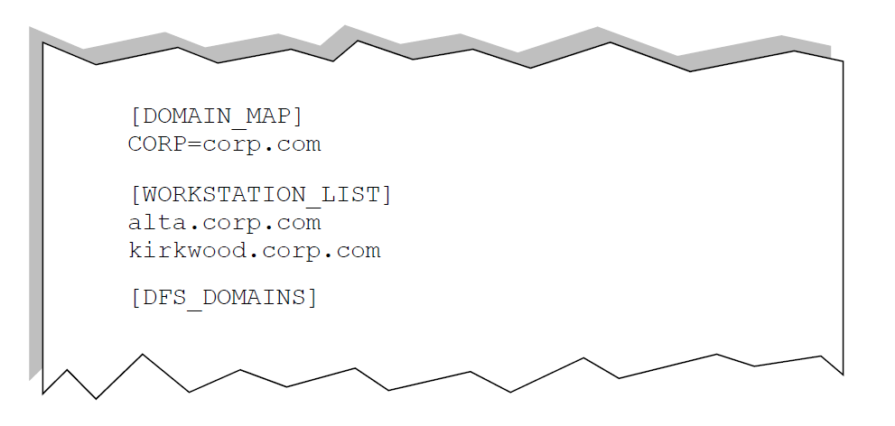
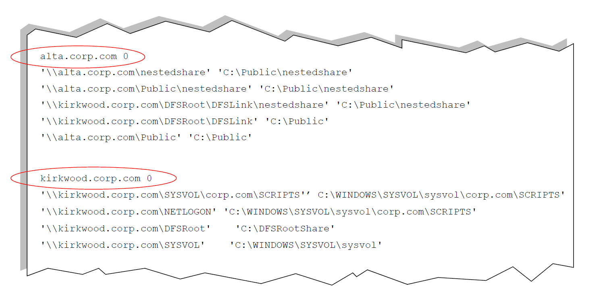

Enrolling Windows file shares
To enroll Windows file shares, you use a utility called Resource Path Discovery (ResourcePathDiscovery.exe).
This utility runs a discovery procedure against the list of servers in the network, and generates a complete list of file shares on those servers, showing the actual network and directory path for each share, with the duplicate shares (different shares that refer to the same actual directory) grouped together. This list is referred to as a MachineList file.
This procedure requires special permissions, since it relies on visibility into multiple machines in the network.
As new file shares are added or existing file shares are deleted, it is important to periodically run Resource Path Discovery to update the file share enrollment. It’s a good idea to set this up in a script that runs on a schedule, such as once a week.
By default, the Resource Path Discovery utility is installed in the <installDirectory>\ControlCenter\tools folder. You should run it from that location.
You can enroll file shares for all file servers.
-
Create a text file containing the list of any hosts in the organization where
you want to search for file shares. This should include all monitored file
servers and any PCs where file shares may have been defined. This file, called
the MachineList file, can contain three sections:
- [DOMAIN_MAP] is an optional section which is used in the case where DFS
shares span multiple domains (for example,
//sand.mycompany.com/dfsroot/dfslink -->c:/share onmachinec.child.mycompany.com). In this example, CHILD is the domain name and child.mycompany.com is how the domain is referenced in DNS. - [WORKSTATION_LIST] is the list of computers you want to search for file shares, and is the only required section. Each machine name must be on a separate line and specified by the full DNS name.
- [DFS_DOMAINS] is an optional section which lists the domains that
contain domain-based dFS shares (for example,
//mycompany.com/dfsroot . . .).
The following figure shows a file that would be used to enroll two computers named Alta and Kirkwood, in a single domain. When creating the MachineList file, be sure to use the upper case, square-bracket format for group headings, exactly as shown.Figure: Sample Resource Path Discovery MachineList File  - [DOMAIN_MAP] is an optional section which is used in the case where DFS
shares span multiple domains (for example,
- On any machine in the network that can connect to all the hosts listed in the file, log in as administrator of the domain that contains the listed servers. You must be logged in with one of the privileges required by Resource Path Discovery.
- Change to the directory <InstallDir>\tools. For example: cd Program Files\NextLabs\Control Center\tools
-
Run the Resource Path Discovery utility, using the following syntax:
ResourcePathDiscovery aliases.txt <MachineListFile>where aliases.txt is the output file, and <MachineListFile> is the name of the text file you created in step 1.
-
When Resource Path Discovery finishes, open the output file and check its
contents to be sure the utility completed the file correctly. The file should
contain a section for each host listed in the MachineList file, with all of its
file shares listed below it. The first line of each section should end with 0,
indicating that no errors occurred during discovery. The following figure shows
two hosts, Alta and Kirkwood.
Figure: Sample Resource Path Discovery Output File  -
When you are satisfied that the output file (aliases.txt)
has been correctly generated, put it into production by copying it to the
aliased_shared directory on the Control Center host, like this:
<InstallationDirectory>\server\aliased_shares\aliases.txt
-
Restart Control Center to force the Management Server to reread the file. This
is required whenever the aliases.txt file is changed.
All Windows file shares have been discovered and enrolled.